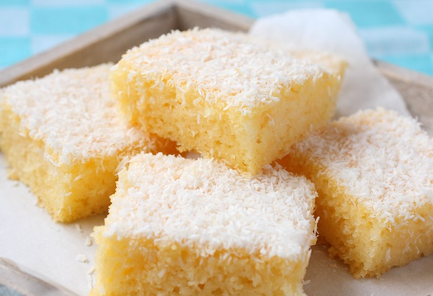

Bolo de coco gelado

Ingredientes
Bolo
- 2 ovos
- 1/2 xícara (chá) de leite
- 1 colher (sopa) de manteiga
- 1 xícara (chá) de açúcar
- 1 colher (sobremesa) de coco ralado
- 1 xícara (chá) de farinha de trigo
- 1 colher (sobremesa) de fermento químico
Cobertura
- 1/2 lata de leite condensado
- 1/2 xícara (chá) de leite
- 1/2 xícara (chá) de coco ralado
Modo de preparo
Bolo
- Bater todos os ingredientes no liquidificador.
- Despejar em uma fôrma untada e enfarinhada e assar a 180º C por 40 minutos.
Cobertura
- Misturar todos os ingredientes e deixar o coco hidratar por 15 minutos.
- Despejar por cima do bolo assado.